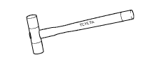
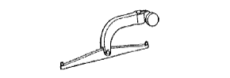

Differential Carya ASSY RR (4WD) Preparation [Assembly]
 | 09223-00010 | Cover & Seal Riper |
 | 09316-20011 | Transfer bearing Replayer |
 | 09316-60011 | Transmission & transmission Fur bearing player |
 | (09316-00011) | Replayer pipe |
 | (09316-00051) | Replacer D |
 | 09330-00021 | Companion flange Holding tool |
 | 09504-22011 | Differency side Washer Remover & Replayer |
 | 09506-35010 | Differential drive Pinnion rear bearing Replayer |
 | 09556-12010 | Drive pinion front Bearlinger remover |
 | 09710-22042 | Rear suspension Bush Tool set |
| (09710-02051) | base | |
 | 09950-30011 | Plastic-A set |
 | (09951-03010) | Upper plate |
 | (09953-03010) | Center bolt |
 | (09954-03010) | arm |
 | (09955-03030) | Rore Plate 130 |
 | (09956-03020) | Adapter 18 |
 | 09950-60010 | Replayer set |
 | (09951-00410) | Replacer 41 |
| (09951-00420) | Replacer 42 | |
| (09951-00610) | Replacer 61 | |
 | 09950-60020 | Replacer set No.2 |
| (09951-00730) | Replacer 73 | |
 | 09950-70010 | Handle set |
 | (09951-07150) | Handle 150 |
 | 09012-2C520 | Deep socket wrench 24mm |
 | 09031-00030 | Ping -punch (φ3mm) |
| 09032-00020 | Tag | |
|  | 09051-1C110 | Plastic hammer |
 | 2046-08 | Dial gauge (10mm) Treated as Banzai Co., Ltd. |
| 25MB | Micrometer Measurement range: 0 to 25mm Treated as Banzai Co., Ltd. | |
 | TMA-20 | Thermometer Treated as Banzai Co., Ltd. |
| M110-25 | Micrometer Measurement range 0-25mm Treatment of Iyasaka Co., Ltd. | |
| TH-10A | Thermometer Treatment of Iyasaka Co., Ltd. |
| TM-110 | Dial gauge (10mm) Treatment of Iyasaka Co., Ltd. |
 | MB-B | Magnetic base Banzai Co., Ltd. |
 | QL-100N | QL Torque wrench (100N) Banzai Co., Ltd. |
| QL-280N | QL Torque wrench (280N) Banzai Co., Ltd. |
 | SF1.5N | F -type torque wrench (1.5N · m) Banzai Co., Ltd. |
| SF3N | F -type torque wrench (3n · m) Banzai Co., Ltd. |
|  | XY-1 | Lever type measurement Banzai Co., Ltd. |
| Toyota genuine MP grease No.2 | ||
| Toyota genuine high poiid gear oil SX | ||
| Toyota genuine high poiid gear oil LSD | ||
| Gwangmyan | ||
| Fragment | ||
| gloves |